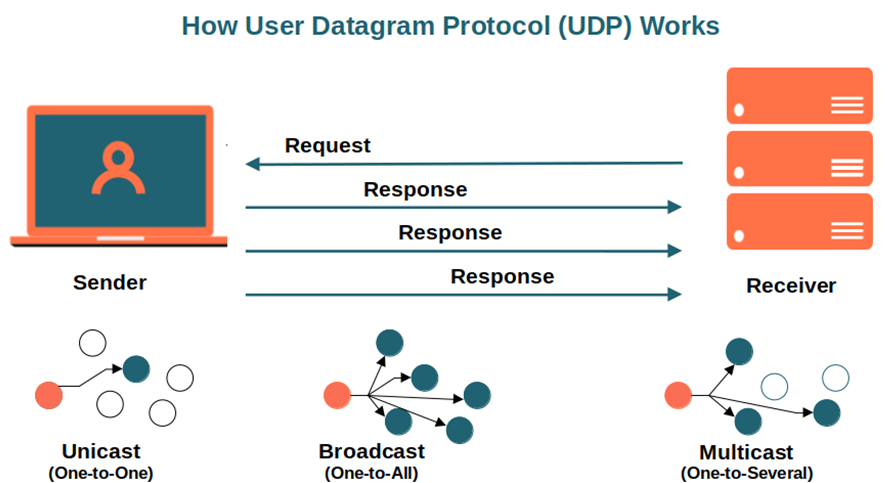
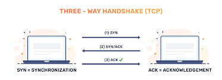
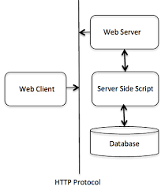

Definition of internet protocols: The Oxford Languages Dictionary, defines Internet Protocols as “A set of rules governing the format of data sent over the internet or other networks.” In simpler terms, Internet Protocols are sets of rules stating the format of how information should be shared across networks such as the Internet.
There are many different types of protocols relating to different types of information being shared (videos, files, text etc.). These protocols are discussed below.
User Datagram Protocol (UDP)
The User Datagram Protocol, or UDP, is a communication protocol used across the Internet for especially time-sensitive transmissions such as video playback or DNS lookups. It speeds up communications by not formally establishing a connection before data is transferred. This allows data to be transferred very quickly, but it can also cause packets to become lost in transit — and create opportunities for exploitation in the form of DDoS attacks.
Like all networking protocols, UDP is a standardized method for transferring data between two computers in a network. Compared to other protocols, UDP accomplishes this process in a simple fashion: it sends packets (units of data transmission) directly to a target computer, without establishing a connection first, indicating the order of said packets, or checking whether they arrived as intended. (UDP packets are referred to as ‘datagrams’.)

Transmission Control Protocol (TCP)
TCP is a communication standard that enables devices to exchange messages over a network. TCP provides communication between an application program and the Internet Protocol. TCP keeps track of individual units of data transmission called ‘segments’ which messages are divided into for efficient routing through the network. TCP minimizes IP packets delivered out of order by reordering packet data or requests. This comes with a sacrifice of speed. TCP is known for accuracy and reliability, but it has a tradeoff of speed.
As a result, high-level protocols that need to transmit data all use TCP Protocol. Examples include peer-to-peer sharing methods like File Transfer Protocol (FTP), Secure Shell (SSH), and Telnet. It is also used to send and receive email through Internet Message Access Protocol (IMAP), Post Office Protocol (POP), and Simple Mail Transfer Protocol (SMTP), and for web access through the Hypertext Transfer Protocol (HTTP).
An alternative to TCP in networking is the User Datagram Protocol (UDP), which is used to establish low-latency connections between applications and decrease transmissions time. TCP can be an expensive network tool as it includes absent or corrupted packets and protects data delivery with controls like acknowledgments, connection startup, and flow control.

Internet Protocol (IP)
of data so that they can travel across networks and arrive at the correct destination. Data traversing the Internet is divided into smaller pieces, called packets. IP information is attached to each packet, and this information helps routers to send packets to the right place. Every device or domain that connects to the Internet is assigned an IP address, and as packets are directed to the IP address attached to them, data arrives where it is needed.
An IP address is a unique identifier assigned to a device or domain that connects to the Internet. Each IP address is a series of characters, such as '192.168.1.1'. Via DNS resolvers, which translate human-readable domain names into IP addresses, users are able to access websites without memorizing this complex series of characters. Each IP packet will contain both the IP address of the device or domain sending the packet and the IP address of the intended recipient, much like how both the destination address and the return address are included on a piece of mail.
Hypertext Transfer Protocol(HTTP)
HTTP is the foundation of the World Wide Web and is used to create and load webpages using hypertext links pointing to other information pages. HTTP is an application layer protocol designed to transfer information between client and server-side devices. The client-side computer makes a request to the server and the server then provides the information to the client that has been set up in webpages using the HTTP format.
An HTTP method, sometimes referred to as an HTTP verb, indicates the action that the HTTP request expects from the queried server. For example, two of the most common HTTP methods are ‘GET’ and ‘POST’; a ‘GET’ request expects information back in return (usually in the form of a website), while a ‘POST’ request typically indicates that the client is submitting information to the web server (such as form information, e.g. a submitted username and password).

File transfer protocol (FTP)
File transfer protocol, as the name suggests, is used for the transfer of files from one device to another over a network such as the internet. FTP works by establishing two connections between the devices. The first connection is used to communicate commands and replies sent between the two devices, while the second connection is used for data transfer. Three different transfer modes are used while these files are in transit namely block, stream and compressed. Stream mode allows FTP to manage information in a string of data without any boundaries. Block mode separate data into blocks which is sent through one at a time until all data has been transferred. Compress mode uses an algorithm to compress the data to smaller sized before being sent.
Although many file transfers can be conducted using Hypertext Transfer Protocol (HTTP) -- another protocol in the TCP/IP suite -- FTP is still commonly used to transfer files behind the scenes for other applications, such as banking services. It is also sometimes used to download new applications via web browsers.